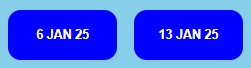

1. The Results page provides access to pages showing all the results completed by the club.
2. The first Results page provides six buttons, dividing the results into 2 monthly periods.

3. Selecting one of these 6 buttons give access to the results by date during the 2 month period.
